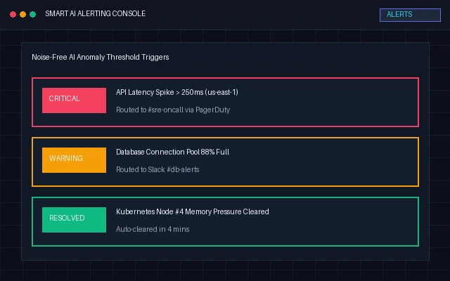
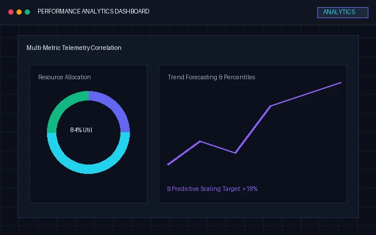
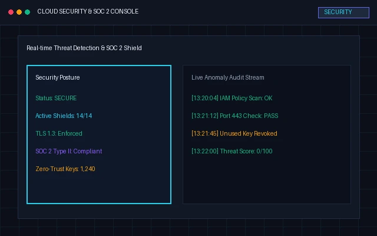
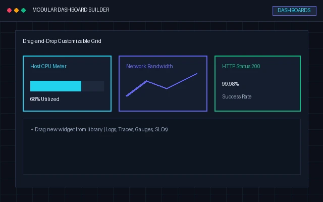

Feature Overview
Every feature, built to work together
Six core capabilities that give you complete observability — from a single, unified platform.

Real-Time Monitoring
Live metrics for every server, container, and service — updated every second.

Smart Alerts
Noise-free, AI-tuned alerts that only page humans when it truly matters.

Performance Analytics
Interactive charts and detailed reports that turn raw data into decisions.

Uptime Monitoring
Synthetic checks from 30+ regions that catch downtime before users do.

Security Monitoring
Threat detection and activity monitoring that keep your cloud locked down.

Custom Dashboards
Drag-and-drop widgets and personalized views for every team.